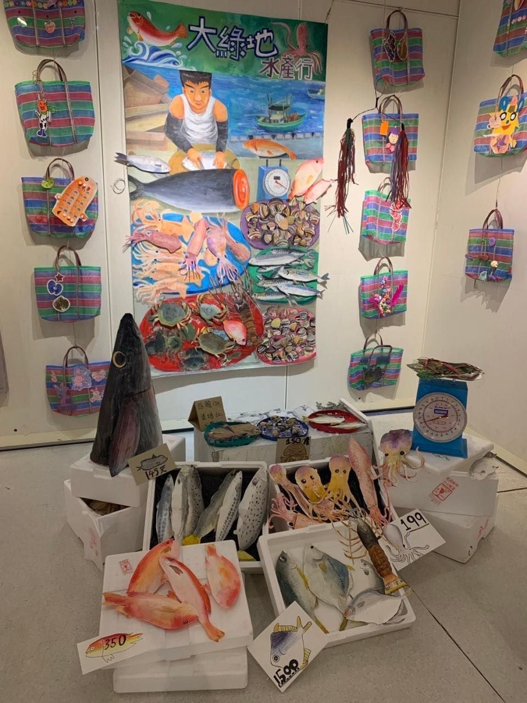
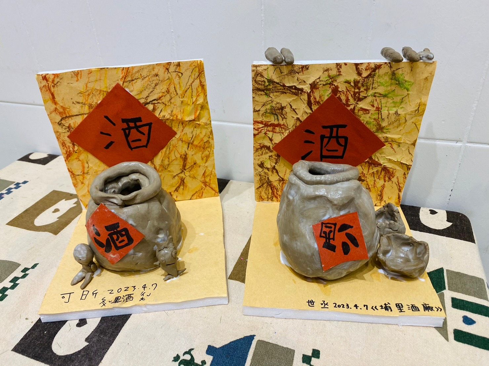

主題介紹
從土地出發，讓孩子在生活中找到自我認同
在這個全球化快速發展的時代，我們更需要帶孩子「回頭看」，看見腳下這片土地的故事與價值。
「在地文化」主題課程，正是從台灣出發，從生活中學習文化、從藝術中建立自我認同。
我們相信：孩子對世界的理解，必須先從理解自己的文化開始。
因此，我們從台灣的節慶習俗、地方工藝、民間信仰、建築形式、飲食風格、自然地景等出發，
一縣一市地帶孩子深入探索，逐步認識屬於這片土地的樣貌與精神。


從土地出發，讓孩子在生活中找到自我認同
在這個全球化快速發展的時代，我們更需要帶孩子「回頭看」，看見腳下這片土地的故事與價值。
「在地文化」主題課程，正是從台灣出發，從生活中學習文化、從藝術中建立自我認同。
我們相信：孩子對世界的理解，必須先從理解自己的文化開始。
因此，我們從台灣的節慶習俗、地方工藝、民間信仰、建築形式、飲食風格、自然地景等出發，
一縣一市地帶孩子深入探索，逐步認識屬於這片土地的樣貌與精神。
課堂中，我們會引導孩子從日常觀察開始：
這些創作不只是一張張圖畫，更是一個孩子對土地的情感表達與文化想像。
文化不是教出來的，而是從生活中長出來的。
唯有讓孩子從小開始認識自己的土地與文化，才能建立真正的自我價值與文化底氣。
當一個孩子能自信地說出「我是誰，我來自哪裡」，
他才能夠穩穩地站在世界上，帶著自己的文化視角，去看更遠的地方。
在大綠地，我們用創作，連結孩子與他所生活的土地。
這就是藝術教育最真實、也最深刻的力量。